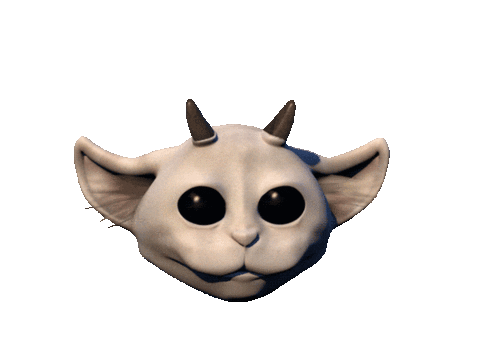
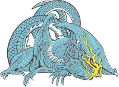
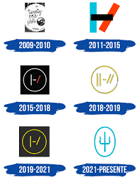
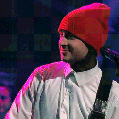

 La primer mascota, Ned.  La segunda mascota, Trash.
 Logos |-/

Twenty One Pilots (en minúsculas, twenty one pilots), también conocido por su abreviación "tøp", es un dúo
estadounidense
de Columbus, Ohio. Originalmente fue fundada, en 2009, por tres compañeros universitarios: Tyler Joseph, Nick
Thomas y Chris Salih;
siendo que estos últimos dos abandonaron el grupo en 2011.
No obstante, en busqueda de un nuevo integrante y facinado por su desempeño en la bateria, Tyler Joseph conoció
e invitó a la banda
a Josh Dun, amigo con el que aún, hoy en día, cuenta y con el que juntos saltaron a la fama internacional.
Actualmente, cuentan con 194 nominaciones, 104 premios (entre ellos, 1 GRAMMY por mejor dúo), y demuestran
seguir por más.